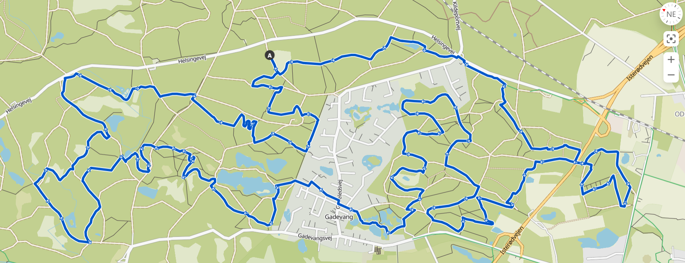
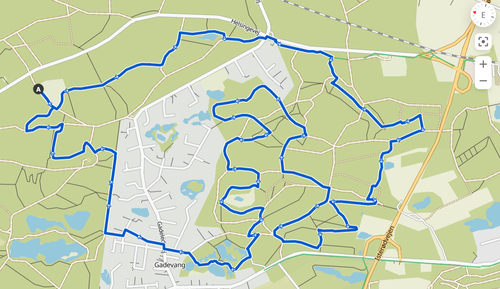

ParforceTrail har trailløb på følgende distancer og datoer:
Natløb lørdag den 14. oktober: Lang rute
Dagsløb søndag den 15. oktober Lang rute, ca. 21 km
GPX fil til ruten: Lang
Dagsløb søndag den 15. oktober kort rute: ca. 12 km
GPX fil til ruten: Kort
Markering
Ruterne er markeret med lyserøde flag der står i venstre side af ruten med max 25 meters mellemrum. Når der skal drejes står der to flag meget tæt på hinanden i den side som man skal dreje til.
Starttider:
Natløb: 14. oktober kl. 19:00
Dagsløb lang rute: 15. oktober kl. 09:00
Dagsløb kort rute: 15. oktober kl. 09:30
Løbene finder sted fra adressen:
P-pladsen ved Helsingevej 7, 3400 Hillerød
Bemærk! Denne placering er ændret i forhold til tidligere år
Plus code: X7FW+CG Hillerød
ParforceTrail inkluderer blandt andet:
Professionel tidstagning - Elektronisk med chip ved dagsløb
Et stort kagebord efter dagsløb samt præmie til hurtigste m / k på begge distancer
Natløbet er et ekstra tilbud til dem der gerne vil prøve den lange rute af i skovens mørke. Det koster ikke noget og er helt på eget ansvar. Ruten er markeret, men der er ikke hjælpere på ruten og I får bare en manuel tidstagning
Bemærk: Du kan gratis tilmelde dig natløbet, hvis du er tilmeldt til den lange distance til dagsløbet. Husk at købe billet til den lange distance til dagsløbet først!
Forplejning
Vi er ikke fedtede, men vi har valgt at løbet, som en del af jagten ikke byder på forfriskninger undervejs, og gennemføres derfor som selvforsynende ude på ruten. I mål skal vi til gengæld nok sørge godt for dig. Pas godt på dig selv og dine medløbere undervejs.
Omklædning
Desværre har vi ikke mulighed for at byde på bad, sauna eller anden dejlig luksus. Husk at tage tøj med der passer til dagen til både før, under og efter løbet.
Toiletter
Til dagen sørger vi for et mobilt WC skur.
Affald
Vi henstiller til, at der ikke smides efterladenskaber i form af brugte gel’er mv. i naturen. I god trail ånd bringer man selv sit affald med til mål. Tak.
Parkering
Der er parkeringsmuligheder ved stævnepladsen. Alle bedes selvfølgelig overholde normale parkeringslove.
Parkeringspladsen kan findes her